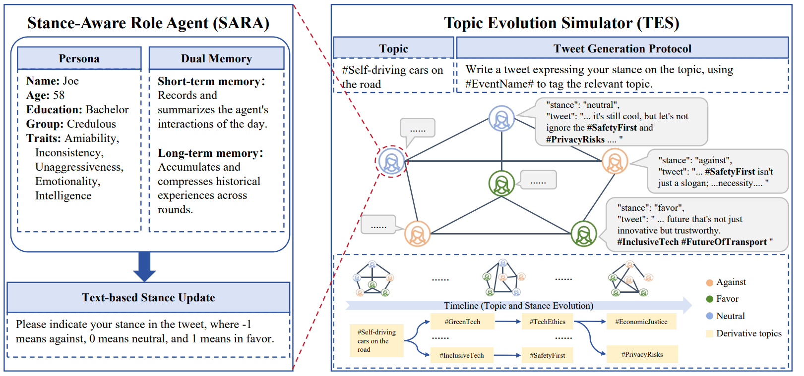

研究背景
一场持续讨论中，人们不仅会改变对原议题的态度，也会提出新的讨论方向。SPARK 研究的是：立场变化与话题扩展怎样在多轮交互中共同发生？
我以共同第一作者参与这项研究。系统用具有不同人设的 LLM Agent 模拟讨论，保留个人发言、记忆与立场轨迹，再分析群体变化。研究对象是合成人物的仿真行为，不是真实用户预测或任务型助手。
现有挑战
- 话题和立场容易被分开研究：只看词分布难以解释“谁听到了什么、为什么改变表达”；只看立场标签，又会忽略讨论对象已经变化。
- 长期交互需要持续状态：只保留最近发言容易遗忘历史，直接累积全部对话又会使上下文不断增长。
- 生成对话不等于完成分析：需要把发言、话题和立场按人物与时间对齐，才能做群体统计、消融与个体回溯。
总体方法：两个核心模块

| 模块 | 解决的问题 | 输出 |
|---|---|---|
| SARA：立场感知角色 Agent | 个体如何结合人设与记忆形成新观点 | 更新后的记忆、发言与立场 |
| TES：话题演化模拟器 | 个体怎样接触彼此，话题怎样进入后续讨论 | 交互关系、话题演化与群体轨迹 |
每天的主循环：选择接触对象 → 收集观点 → 更新记忆 → 生成发言与立场 → 记录新话题 → 进入下一天。
模块一：个体状态与记忆更新
1. 初始化人设与独立状态
每个 Agent 拥有自己的身份、初始观点与历史，不共用一份对话记忆。
具体实现：初始化人设与独立状态
- 公开实现为每个个体保存 unique_id、name、age、traits、qualification、topic 和 opinion，并维护 opinions、stances、reasonings 等时间序列。
- 人口由支持、反对、中立三类初始人数相加得到；公开样例默认各 36 人，共 108 人，初始发言从对应类别的句子集合中选择。
- 初始类别映射为 −1 / 0 / 1。人设作为提示条件影响生成，不是单独训练的人格模型，也不能保证角色行为始终一致。
2. 收集当天接触到的观点
对选中的其他 Agent，读取其最近一条观点并记录来源。
具体实现：收集当天接触到的观点
- 逐个读取接触对象的 unique_id 与 opinions[-1]；观点列表写入 short_opinion_memory，接触 ID 写入 contact_ids。
- 完整方法将当天观点摘要化，再把旧长期记忆与新摘要交给另一次模型调用，得到新的长期记忆文本。
- 两次摘要调用承担不同职责：短期摘要整合当天信息，长期更新保留跨日连续性。这不是向量检索，也没有独立的 Encoder–Decoder 压缩训练。
- 当前公开默认入口把短期摘要设为 'none'，因此这一入口不能直接代表完整双层记忆实验。
3. 生成新观点并解析立场
将人物属性、原观点、当前议题和更新后的长期记忆组合为提示。
具体实现：生成新观点并解析立场
- 调用接口请求 JSON 对象，读取 tweet、stance、reasoning；stance 转为整数，发言与解释追加到个体历史。
- 生成后的 opinion 成为后续交互可读的最新观点；长期记忆同步更新并追加到 long_memory_full。
- 当前解析异常会回退为 tweet='none'、reasoning='none'、stance=0。这个 0 可能是技术失败，分析时应与真实中立区分。
- 模型生成的 reasoning 是随输出保存的解释文本，不等同于可验证的内部推理过程。
一次更新如何理解
教学示例，不是论文中的原始发言。
原观点：担心自动驾驶的安全性
当天接触：事故风险、出行便利两类观点
短期摘要：记录双方观点与分歧
长期更新：结合过去的安全顾虑与当天新信息
新发言：保留顾虑，但认可部分便利性
立场标签：由模型输出并解析，不能由摘要规则直接决定模块二：交互调度与话题演化
1. 选择当天的接触对象
通过群体调度器决定个体可以看到哪些人的观点。
具体实现：选择当天的接触对象
- 公开实现先排除自己，将其他个体随机打乱，取 contact_rate 个对象；默认样例为每天 3 个接触对象、运行 14 天。
- 使用 Mesa RandomActivation 执行个体更新，这是随机顺序调度，不是“108 个模型请求并发执行”。
- 接触关系不一定互相对称；公开实现读取的是执行当时的最新观点，更新顺序可能让后执行者读到当天的新观点，不能表述为严格同步快照。
2. 从发言中观察话题扩展
让生成内容显式包含事件标签，以便把讨论变化转为可分析对象。
具体实现：从发言中观察话题扩展
- 论文要求发言使用事件话题标签；TES 在出现未见过的子话题时扩展话题结构，并追踪后续出现情况。
- 话题来自交互后的发言，而不是预先列出所有分支供 Agent 选择；立场和话题因此在同一轮输出中关联。
- 当前公开包的核心运行文件能够核对发言与轨迹记录，但不足以核实完整话题树构建、同义标签合并和全部指标计算；这里按论文方法介绍，不补写未见到的实现。
3. 保存逐日状态与可追踪记录
既保留人物级输出，也保存群体运行状态，方便回溯。
具体实现：保存逐日状态与可追踪记录
- 公开样例记录人物 ID、人设、立场、tweet、reasoning 与时间戳，群体层使用 DataCollector 收集统计并导出 CSV。
- 每轮保存模型 Checkpoint，支持从历史状态继续；公开实现使用 pickle，仅适合读取可信的自有文件。
- 运行日志、人物轨迹与统计必须区分：例如 JSON 解析失败造成的中立标签不应直接作为真实态度变化统计。
实验设计与结果
论文使用 Python、Mesa 与 DeepSeek-V3-0324，在政治、科技、社会、医疗、科学五个领域开展 108 个合成 Agent 的仿真。以下数值对应 论文正文与附录 的第 4 节、表 1 与附录表 2。
先明确指标含义
| 指标 | 计算含义 | 解读边界 |
|---|---|---|
| OB：立场偏向 | 最终时刻立场标签的均值 | 接近 0 可能是人人中立，也可能是支持与反对相互抵消 |
| OD：立场多样性 | 最终立场标签的标准差 | 衡量分散程度，不是任务准确率，也不是越高越“好” |
| TC：话题一致性 | 论文按单个时间片的话题分布熵定义 | 按该定义，值越低表示话题越集中 |
| TD：话题多样性 | 相邻时间片话题分布的 KL 散度 | 衡量分布变化，不直接等于新增话题数量或创新速度 |
关键结果
| 分析 | 论文结果 | 说明 |
|---|---|---|
| 立场变化与新话题出现 | Pearson r = 0.88 | 仿真时间序列中的正相关，不能单凭相关系数证明双向因果 |
| 完整记忆架构 | OD = 0.504 | 记忆消融实验基线 |
| 移除短期记忆 | OD = 0.300 | 较完整架构下降约 40.5% |
| 移除长期记忆 | OD = 0.309 | 较完整架构下降约 38.7% |
| 人格分组的话题变化 | Credulous / Skeptical 平均 TD：0.81 / 0.66 | 属于人格组对比，不能改写成科技领域相对其他领域的提升 |
消融结果支持记忆组件会影响群体立场分布；它不是模型后训练带来的准确率提升，也不能据此推导存储或 Token 成本下降。
个体案例：怎样解释一次立场变化
论文以自动驾驶议题中的 Joe 为例，观察到其态度随安全、便利、伦理和监管等子话题变化而反复调整。案例的价值在于：可以回到同一个人的发言与接触信息，解释群体统计背后的具体过程，而不是只展示一条总量曲线。
复盘时按“接触了什么观点 → 记忆如何更新 → 新发言表达什么 → 标签是否一致 → 后续出现什么话题”检查。不能仅因某个话题先出现，就认定它单独导致了态度改变。
局限与复现边界
- 仿真不等于真实社会：人物由模型生成，共用底层模型偏好；网络结构和信息流简化，不能直接推出真实群体的行为规律。
- 记忆会损失信息：摘要可能遗漏少数观点或放大已有偏向，需要对照原始接触记录，而不是把摘要视作完整事实。
- 指标需要完整计算口径：话题标签归一、KL 零概率处理、时间片划分和失败样本处理都会影响结论。
- 公开样例与完整实验需要对齐：当前默认关闭短期摘要，部分路径固定，随机种子设置也需检查；不能直接运行默认入口就声称复现论文全部结果。
后续改进：先固定配置、种子和模型版本，区分解析失败与中立状态，再补充多次运行、真实数据校准和更丰富的交互网络。